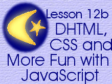

|

This page was set up almost exactly like the main page for this lesson.
In fact, the only difference in the look of the page is the style of
the borders.
Although the lesson didn't call for it, I spent a lot
of time looking at what can be done with DHTML, CSS,
and JavaScript. I find it frustrating that most of the
examples I find are trivial and a lot of them are annoying
(like scrolling messages in the status bar) and make
the page look amateurish. However, I did find some things
that were useful. For example, instead of showing a
menu that uses a drop-down list where you can only see
one option at a time, I've formatted a menu where you
can see more of what is available:
Now that you've seen this page, you may want to return
to the main page for this
lesson now.
As an aside, this page will not validate properly as
HTML 4.01 Transitional because the form (the menu above
here) doesn't have an action. It doesn't have an action
because the button isn't a submit button, it calls a
function to navigate to another page.

 


Graphics and text Copyright © 2006,
Irene Smith. All rights reserved.
|